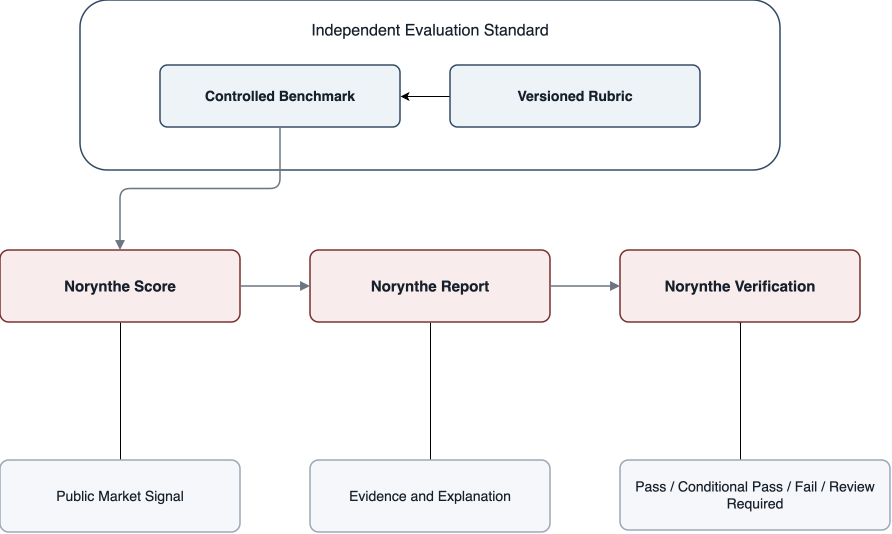

Overview, founder memo, business model, and raise plan.

Investor access
Contact
Selected investor and strategic review conversations
Norynthe investor access.
A controlled diligence portal for Norynthe's independent AI evaluation standard, product artifacts, assessment surfaces, strategic materials, and founder context.
Norynthe is building the independent external trust layer for AI systems: a standard for how model behavior is evaluated, compared, and understood outside the model owner's control.
Working MVP
Console, reports, scoring workflow.
$2M plan
Infrastructure-first raise model.
Trust layer
External AI evaluation standard.
Evidence path
Review sequence for diligence.
What access unlocks
A guided packet, not a file dump.
The portal connects the company narrative to working product surfaces, revenue logic, financial assumptions, and the standard-forming argument behind independent AI evaluation.

Console walkthrough, client report, and scoring detail.
White paper, enterprise use cases, and compute thesis.
Deployment model, runway logic, and commercialization assumptions.
Start here
A short path through the diligence packet.
These materials establish the company narrative, founder context, and executive-level product thesis before moving into deeper artifacts.
Investor overview
Company and category narrative
The concise investor-facing overview of Norynthe's positioning, market argument, and standard-forming opportunity.
Business model
Revenue logic and paid evidence layer
How Norynthe makes money through public trust scores, enterprise evidence access, and recurring decision-infrastructure revenue.
Raise plan
$2M to build the AI trust lab
The funding target, use of funds, strategic compute unlock, burn philosophy, and milestones behind the lab build.
Financial model
Assumptions, forecast, and runway logic
The $2M deployment model, founder-led runway logic, six-month commercial ramp, revenue forecast, and investor-ready charts.
Founder memo
Why this company exists
Founder-level context on the trust problem, the category, and the rationale for building an external evaluation layer.
Executive overview
Boardroom-readable summary
A compact review of the score, evidence layer, benchmark system, and long-term standard-forming strategy.
Product artifacts
The working surface behind the thesis.
These artifacts show how the Norynthe.Score concept becomes assessment records, reviewer context, report surfaces, and operational workflow.
MVP console
Norynthe OS walkthrough
The working console surface for governed evaluation launch, benchmark selection, scoring dimensions, reviewer state, model outputs, records, and operational settings.
Client report
External report surface
The customer-facing report format translating internal assessment records into executive findings and score detail.
Multi Model Report
Comparative evidence and scoring detail
A deeper model-comparison report with evidence excerpts, dimension-level interpretation, reviewer notes, and traceable score context.
Strategic materials
The category argument and enterprise path.
These documents expand the market position, enterprise use cases, and long-term institutional value of independent AI evaluation records.
White paper
Independent external trust layer
The deeper thesis for Norynthe.Score, benchmark governance, behavioral credibility, and external trust infrastructure.
Enterprise use cases
Institutional adoption paths
Examples of how independent model credibility records could support buyers, regulated enterprises, and strategic reviewers.
Compute thesis
The strategic role of owned compute
Why controlled local inference, benchmark protection, and compute ownership become part of Norynthe's long-term moat.
Review access
Materials for selected conversations.
The portal organizes Norynthe investor materials, product artifacts, and strategic documents into a focused review path.
Review sequence
Recommended order
- Start with the investor overview, business model, and founder memo.
- Review the Norynthe OS walkthrough to see the completed MVP console and operational workflow.
- Use the white paper, enterprise use cases, and compute thesis for the broader category, adoption, and infrastructure strategy.